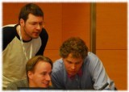
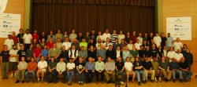

The 2008 Linux Kernel Summit

The 2008 Linux Kernel Summit was held September 15 and 16 in Portland, Oregon, immediately prior to the Linux Plumbers Conference. At this invitation-only meeting, some 80 developers discussed a number of issues relevant to the kernel and its future development. The following reports were written by Jonathan Corbet, who attended the event and was a member of its program committee.This reporting was sponsored by LWN's subscribers; if you appreciate this kind of content, please consider subscribing to LWN and helping us create more of it.
Day 1
The sessions held on the first day were:
- Linux 3.0: should the developers
do a Linux 3.0 release with a focus on dumping older, unneeded code?
- Minisummit reports: reports from
gatherings of power management, wireless networking, and containers
developers.
- When should drivers be merged? A
wide-ranging discussion on the trade-offs between getting drivers into
the kernel quickly and waiting until they are up to kernel coding
standards.
- Filesystem and block layer
interaction; what contemporary file systems need to be able to get
the most out of storage devices.
- Cross-subsystem issues; how do we
evolve subsystems which are heavily used by several other parts of the
kernel?
- Tools, and the new Patchwork tool in
particular.
- Bootstrap code. Why does every
distributor throw together its own initrd/initramfs code, and can that
situation be improved?
- Kernel quality and release process, various discussions on how to produce better kernels and a near-decision to move to a one-week merge window.

Day 2
- Tracing. A lengthy discussion on
user requirements for kernel tracing and how those requirements might
eventually be met.
- Documentation. We always want more
and better documentation, but what documentation would be most useful
to the development community?
- There was a brief bug-fixing session aimed at the top entries on the
KernelOops.org. Over the course
of half an hour, the developers were able to fix 13 of the top 14
bugs. It was widely agreed that this was a productive use of time
which will probably be repeated at future events.
- More minisummit reports covering
virtualization, networking, and kernel bloat.
- All about threads; kernel thread pools
and threaded interrupt handlers in particular.
- Projects with large user-space
components; how can we make it easier for the direct rendering
infrastructure project to work with the mainline kernel?
- Rafael Wysocki led a section on the new suspend/resume
infrastructure. Most of that talk was concerned with the API, which
was covered here back in
March, so it will not be written up again now. Some changes will
likely be made; stay tuned to LWN for the details.
Linus did ask the crowd how many people were still unable to suspend their laptops. The number of hands raised was quite small; things have clearly gotten better in this area.
- Fixing the Kernel Janitors Project. How can we do a better job of bringing new developers into the kernel community?
The closing party (which was also the Linux Plumbers Conference opening party) was the venue chosen for the annual election of members to the Linux Foundation's Technical Advisory Board. The move out of the regular kernel summit sessions was intended to allow a wider group of people to participate in the election. It would appear to have been successful in that regard; there were record numbers of both candidates and voters. The board members elected this time around were James Bottomley, Kristen Carlson Accardi, Chris Mason, Dave Jones, Chris Wright, and Christoph Hellwig. Christoph was elected to a one-year term; all of the others will serve two-year terms.
Next year's kernel summit is currently scheduled for October 18 to 20
in Tokyo, Japan.
| Index entries for this article | |
|---|---|
| Kernel | Kernel Summit |
| Conference | Kernel Summit/2008 |
Posted Sep 16, 2008 9:19 UTC (Tue)
by error27 (guest, #8346)
[Link] (1 responses)
I certainly prefer it to fedora's initrd. There a few times when I've had to stick a statically compiled bash shell into a fedora installer initrd to debug it. Grumble.
Posted Sep 16, 2008 11:00 UTC (Tue)
by dberkholz (guest, #23346)
[Link]
Posted Sep 16, 2008 9:36 UTC (Tue)
by mjthayer (guest, #39183)
[Link] (1 responses)
Posted Sep 16, 2008 15:07 UTC (Tue)
by martinfick (subscriber, #4455)
[Link]
Posted Sep 18, 2008 3:39 UTC (Thu)
by jgsack@san.rr.com (guest, #33287)
[Link]
..jim
Boot stap code & nash
"nash" stands for "not a shell." You can't actually write standard shell syntax for your initrd's linuxrc -- it's got lots of missing and extra features. Here's a copy of the nash man page. Something like a shell but not quite a shell is just confusing.
Boot stap code & nash
The 2008 Linux Kernel Summit
Comments on front page
The 2008 Linux Kernel Summit